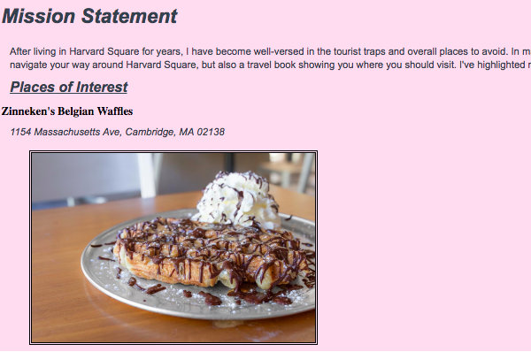
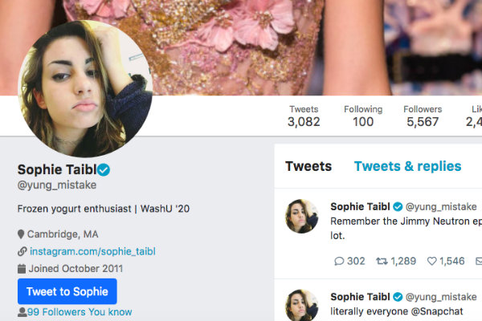
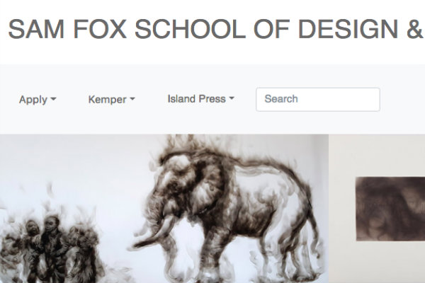

Experienced Writer with a demonstrated history of working in the online media industry. Skilled in Microsoft Word, Instagram, Adobe Creative Suite, InDesign, and Editing. Strong media and communication professional with a Bachelor of Arts - BA focused in Psychology and Writing, Minor Design from Washington University in St. Louis.
Experience
Through web development, I have learned crucial web design principles that have supplemented my design education. Furthermore, I have learned basic HTML and CSS formatting skills, which will allow me to easily design future blogs in my career. When starting a project, I normally begin with the basic HTML elements and then from there move onto the simple CSS parts, such as color and text formatting. From there, I move onto the more complex aspects such as hover elements and dropdown menus.

In this assignment we made a travel guide for our favorite city. We listed various stores and restaurants with their menus and prices. Additionally, we added a submit form to have the viewer subscribe to our email list.

In this assignment, we made a visual copy of a Twitter page. Using websites such as Bootstrap and Font Awesome, we mimiced the icons and fonts used on Twitter as closely as possible. Lastly, we made sure to use identical color schemes and font sizes.

In this assignment, we redesigned an existing website for a Department or School/College within WashU. It was required to have a navigation bar, along with high quality photos.